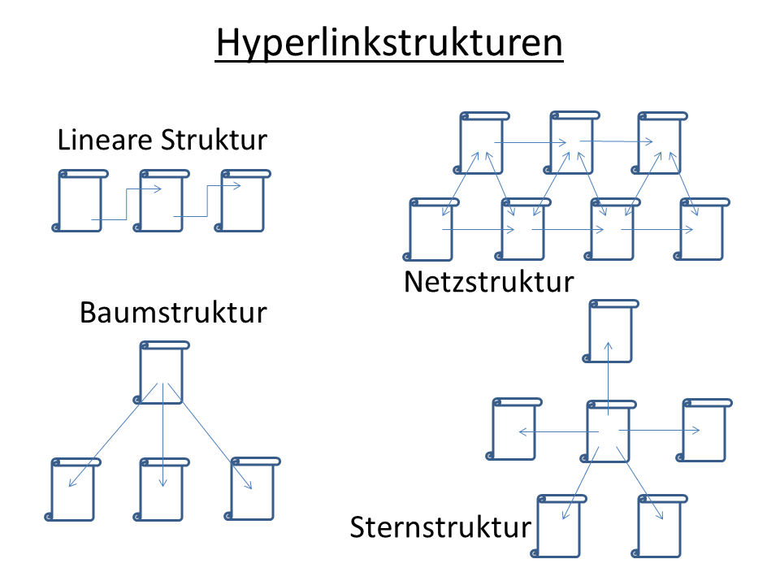

Hyperlinks Using CSS
Plain hyperlink: Read my Blog - Border added to links to show the size of the "hot" area.
Remove underline + add padding for larger target area: Read my Blog
Change link color: (all four states: new - visited - hover - active) Read my Blog
Visit my Site
-- Depends on browser implementation, especially for visited links.
Button Effect: Read my Blog
Hover Effect: Read my Blog
Adding a graphic with text: Like This
Downloadable files using icon to designate the file type:
Read our newsletter

Whatever effect you use, be consistent and use the same effect for all the hyperlinks on the page.
Thumbnail images as links to a larger photo: 
Please click on the image for a larger view.